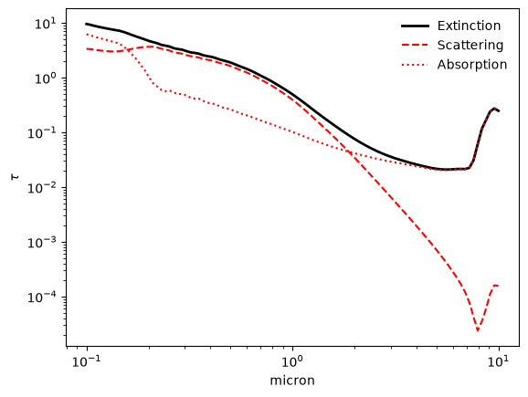
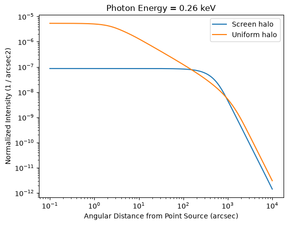

Quick start¶
import numpy as np
import matplotlib.pyplot as plt
import astropy.units as u
import xdust
Extinction curves¶
To compute an extinction curve, start with a Grain Population (specifying a grian size distribution, composition, and scattering model). SingleGrainPop accepts short string names for the grain size distribution, composition, and scattering model. Here we use 'Powerlaw' for the size distribution, 'Silicate' for the composition (Draine 2003), and 'Mie' for the scattering physics.
# A grid of wavelengths spanning the optical/UV
wavelength_grid = np.logspace(-1, 1, 100) * u.micron
silicate_pop = xdust.SingleGrainPop('Powerlaw', 'Silicate', 'Mie')
silicate_pop.calculate_ext(wavelength_grid)
The plot_ext method plots the extinction, scattering, and absorption efficiencies, integrated over the grain size distribution.
ax = plt.subplot(111)
silicate_pop.plot_ext(ax, 'all', frameon=False)
plt.loglog()
[]

An X-ray dust scattering halo for the same grain population¶
X-ray scattering halos use the xdust.halos module, which needs an energy grid, an angular grid, and a GrainPop (here, our silicate_pop) to model. We compare two geometries:
UniformGalHalo– dust distributed uniformly along the line of sightScreenGalHalo– dust confined to a thin screen at a fractionxof the distance to the source
# X-ray energy grid and angular grid for the halo calculation
n_energy, n_theta = 50, 200
energy_grid = np.logspace(-1, 1, n_energy) * u.keV
theta_grid = np.logspace(-1, 4, n_theta) * u.arcsec
# Initialize the Halo objects for uniform and screen geometries
uniform_halo = xdust.halos.UniformGalHalo(energy_grid, theta_grid)
screen_halo = xdust.halos.ScreenGalHalo(energy_grid, theta_grid)
dust_pop = xdust.make_MRN_RGDrude(md=1.e-6)
# Compute the scattering halo profiles
uniform_halo.calculate(dust_pop)
screen_halo.calculate(dust_pop, x=0.33)
Both halos are calculated from the same grain population, so we can compare their surface brightness profiles directly. Below, we plot the normalized intensity at a single photon energy.
i=10
plt.plot(theta_grid, screen_halo.norm_int[i, :], label='Screen halo')
plt.plot(theta_grid, uniform_halo.norm_int[i, :], label='Uniform halo')
plt.loglog()
plt.legend()
plt.title("Photon Energy = {:.2f}".format(energy_grid[i]))
plt.xlabel(r"Angular Distance from Point Source ({})".format(theta_grid.unit))
plt.ylabel(r"Normalized Intensity ({})".format(screen_halo.norm_int.unit))
Text(0, 0.5, 'Normalized Intensity (1 / arcsec2)')

To compute the surface brightness, multiply each row [i,:] by the absorbed flux[i] in units of your choice (e.g., photon/s/cm\(^2\)). See the next pages in Tutorials for a closer look at customizing grain populations, choosing scattering models, and working with halo intensities and point-source spectra.